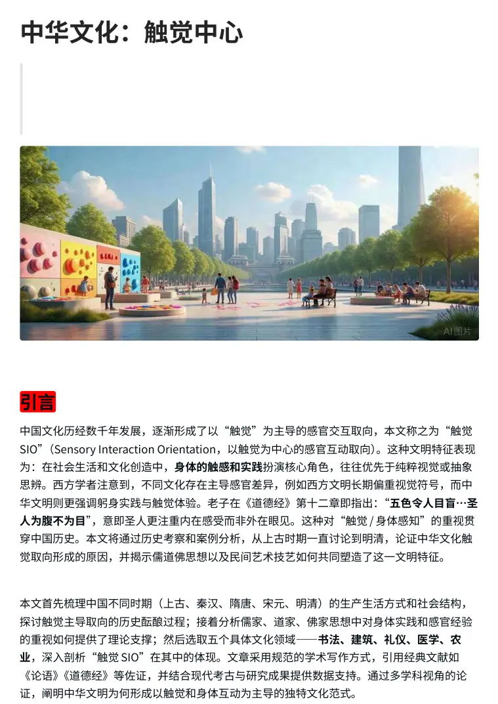
引言
中国文化历经数千年发展，逐渐形成了以“触觉”为主导的感官交互取向，本文称之为“触觉SIO”（Sensory Interaction Orientation，以触觉为中心的感官互动取向）。这种文明特征表现为：在社会生活和文化创造中，身体的触感和实践扮演核心角色，往往优先于纯粹视觉或抽象思辨。西方学者注意到，不同文化存在主导感官差异，例如西方文明长期偏重视觉符号，而中华文明则更强调躬身实践与触觉体验。老子在《道德经》第十二章即指出：“五色令人目盲…圣人为腹不为目”，意即圣人更注重内在感受而非外在眼见。这种对“触觉/ 身体感知”的重视贯穿中国历史。本文将通过历史考察和案例分析，从上古时期一直讨论到明清，论证中华文化触觉取向形成的原因，并揭示儒道佛思想以及民间艺术技艺如何共同塑造了这一文明特征。
本文首先梳理中国不同时期（上古、秦汉、隋唐、宋元、明清）的生产生活方式和社会结构，探讨触觉主导取向的历史酝酿过程；接着分析儒家、道家、佛家思想中对身体实践和感官经验的重视如何提供了理论支撑；然后选取五个具体文化领域——书法、建筑、礼仪、医学、农
业，深入剖析“触觉SIO”在其中的体现。文章采用规范的学术写作方式，引用经典文献如
《论语》《道德经》等佐证，并结合现代考古与研究成果提供数据支持。通过多学科视角的论证，阐明中华文明为何形成以触觉和身体互动为主导的独特文化范式。
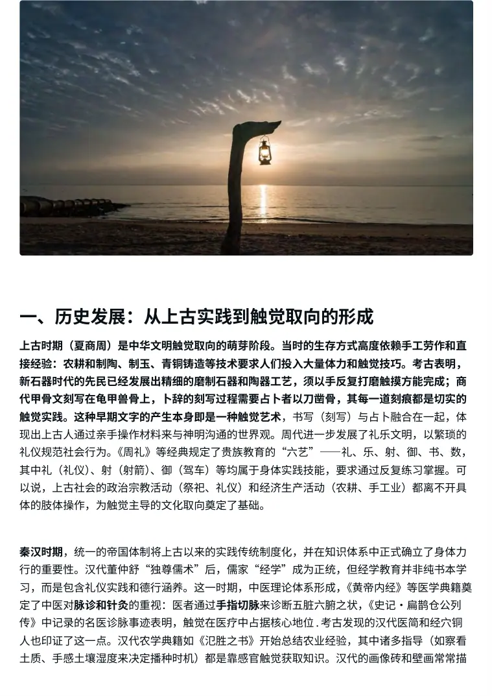
一、历史发展：从上古实践到触觉取向的形成
上古时期（夏商周）是中华文明触觉取向的萌芽阶段。当时的生存方式高度依赖手工劳作和直接经验：农耕和制陶、制玉、青铜铸造等技术要求人们投入大量体力和触觉技巧。考古表明，新石器时代的先民已经发展出精细的磨制石器和陶器工艺，须以手反复打磨触摸方能完成；商代甲骨文刻写在龟甲兽骨上，卜辞的刻写过程需要占卜者以刀凿骨，其每一道刻痕都是切实的触觉实践。这种早期文字的产生本身即是一种触觉艺术，书写（刻写）与占卜融合在一起，体现出上古人通过亲手操作材料来与神明沟通的世界观。周代进一步发展了礼乐文明，以繁琐的礼仪规范社会行为。《周礼》等经典规定了贵族教育的“六艺”——礼、乐、射、御、书、数，其中礼（礼仪）、射（射箭）、御（驾车）等均属于身体实践技能，要求通过反复练习掌握。可以说，上古社会的政治宗教活动（祭祀、礼仪）和经济生产活动（农耕、手工业）都离不开具体的肢体操作，为触觉主导的文化取向奠定了基础。
秦汉时期，统一的帝国体制将上古以来的实践传统制度化，并在知识体系中正式确立了身体力行的重要性。汉代董仲舒“独尊儒术”后，儒家“经学”成为正统，但经学教育并非纯书本学习，而是包含礼仪实践和德行涵养。这一时期，中医理论体系形成，《黄帝内经》等医学典籍奠定了中医对脉诊和针灸的重视：医者通过手指切脉来诊断五脏六腑之状，《史记·扁鹊仓公列传》中记录的名医诊脉事迹表明，触觉在医疗中占据核心地位. 考古发现的汉代医简和经穴铜人也印证了这一点。汉代农学典籍如《氾胜之书》开始总结农业经验，其中诸多指导（如察看土质、手感土壤湿度来决定播种时机）都是靠感官触觉获取知识。汉代的画像砖和壁画常常描
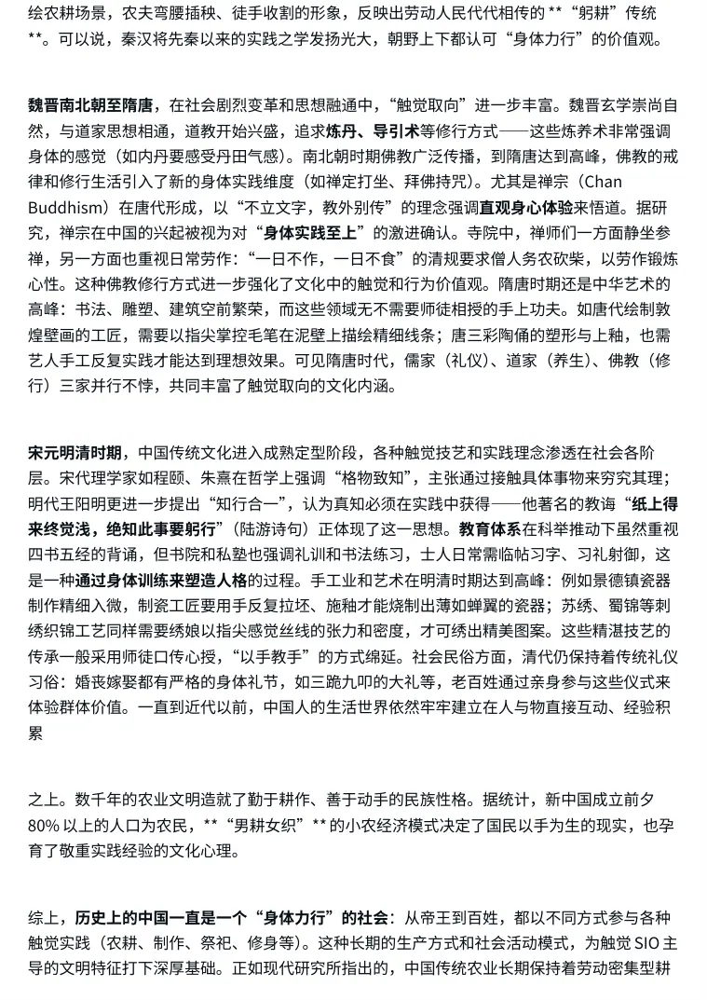
绘农耕场景，农夫弯腰插秧、徒手收割的形象，反映出劳动人民代代相传的“躬耕”传统
。可以说，秦汉将先秦以来的实践之学发扬光大，朝野上下都认可“身体力行”的价值观。
魏晋南北朝至隋唐，在社会剧烈变革和思想融通中，“触觉取向”进一步丰富。魏晋玄学崇尚自然，与道家思想相通，道教开始兴盛，追求炼丹、导引术等修行方式——这些炼养术非常强调身体的感觉（如内丹要感受丹田气感）。南北朝时期佛教广泛传播，到隋唐达到高峰，佛教的戒律和修行生活引入了新的身体实践维度（如禅定打坐、拜佛持咒）。尤其是禅宗（Chan
Buddhism）在唐代形成，以“不立文字，教外别传”的理念强调直观身心体验来悟道。据研究，禅宗在中国的兴起被视为对“身体实践至上”的激进确认。寺院中，禅师们一方面静坐参禅，另一方面也重视日常劳作：“一日不作，一日不食”的清规要求僧人务农砍柴，以劳作锻炼心性。这种佛教修行方式进一步强化了文化中的触觉和行为价值观。隋唐时期还是中华艺术的高峰：书法、雕塑、建筑空前繁荣，而这些领域无不需要师徒相授的手上功夫。如唐代绘制敦煌壁画的工匠，需要以指尖掌控毛笔在泥壁上描绘精细线条；唐三彩陶俑的塑形与上釉，也需艺人手工反复实践才能达到理想效果。可见隋唐时代，儒家（礼仪）、道家（养生）、佛教（修行）三家并行不悖，共同丰富了触觉取向的文化内涵。
宋元明清时期，中国传统文化进入成熟定型阶段，各种触觉技艺和实践理念渗透在社会各阶
层。宋代理学家如程颐、朱熹在哲学上强调“格物致知”，主张通过接触具体事物来穷究其理；明代王阳明更进一步提出“知行合一”，认为真知必须在实践中获得——他著名的教诲“纸上得来终觉浅，绝知此事要躬行”（陆游诗句）正体现了这一思想。教育体系在科举推动下虽然重视四书五经的背诵，但书院和私塾也强调礼训和书法练习，士人日常需临帖习字、习礼射御，这是一种通过身体训练来塑造人格的过程。手工业和艺术在明清时期达到高峰：例如景德镇瓷器制作精细入微，制瓷工匠要用手反复拉坯、施釉才能烧制出薄如蝉翼的瓷器；苏绣、蜀锦等刺绣织锦工艺同样需要绣娘以指尖感觉丝线的张力和密度，才可绣出精美图案。这些精湛技艺的传承一般采用师徒口传心授，“以手教手”的方式绵延。社会民俗方面，清代仍保持着传统礼仪习俗：婚丧嫁娶都有严格的身体礼节，如三跪九叩的大礼等，老百姓通过亲身参与这些仪式来体验群体价值。一直到近代以前，中国人的生活世界依然牢牢建立在人与物直接互动、经验积累
之上。数千年的农业文明造就了勤于耕作、善于动手的民族性格。据统计，新中国成立前夕
80% 以上的人口为农民，“男耕女织” 的小农经济模式决定了国民以手为生的现实，也孕育了敬重实践经验的文化心理。
综上，历史上的中国一直是一个“身体力行”的社会：从帝王到百姓，都以不同方式参与各种触觉实践（农耕、制作、祭祀、修身等）。这种长期的生产方式和社会活动模式，为触觉SIO 主导的文明特征打下深厚基础。正如现代研究所指出的，中国传统农业长期保持着劳动密集型耕
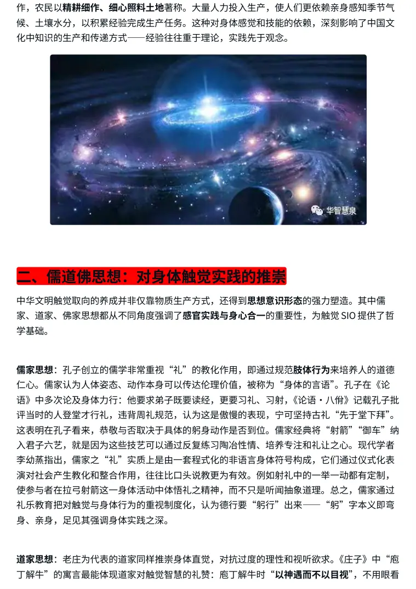
作，农民以精耕细作、细心照料土地著称。大量人力投入生产，使人们更依赖亲身感知季节气候、土壤水分，以积累经验完成生产任务。这种对身体感觉和技能的依赖，深刻影响了中国文化中知识的生产和传递方式——经验往往重于理论，实践先于观念。
二、儒道佛思想：对身体触觉实践的推崇
中华文明触觉取向的养成并非仅靠物质生产方式，还得到思想意识形态的强力塑造。其中儒
家、道家、佛家思想都从不同角度强调了感官实践与身心合一的重要性，为触觉SIO 提供了哲学基础。
儒家思想：孔子创立的儒学非常重视“礼”的教化作用，即通过规范肢体行为来培养人的道德仁心。儒家认为人体姿态、动作本身可以传达伦理价值，被称为“身体的言语”。孔子在《论语》中多次论及身体力行：他要求弟子既要读经，更要习礼、习射，《论语·八佾》记载孔子批评当时的人登堂才行礼，违背周礼规范，认为这是傲慢的表现，宁可坚持古礼“先于堂下拜”。这表明在孔子看来，恭敬与否取决于具体的躬身动作是否到位。儒家经典将“射箭”“御车”纳入君子六艺，就是因为这些技艺可以通过反复练习陶冶性情、培养专注和礼让之心。现代学者李幼蒸指出，儒家之“礼”实质上是由一套程式化的非语言身体符号构成，它们通过仪式化表演对社会产生教化和整合作用，往往比口头说教更为有效。例如射礼中的一举一动都有定制，使参与者在拉弓射箭这一身体活动中体悟礼之精神，而不只是听闻抽象道理。总之，儒家通过礼乐教育把对触觉与身体行为的重视制度化，认为德行要“躬行”出来——“躬”字本义即弯身、亲身，足见其强调身体实践之深。
道家思想：老庄为代表的道家同样推崇身体直觉，对抗过度的理性和视听欲求。《庄子》中“庖丁解牛”的寓言最能体现道家对触觉智慧的礼赞：庖丁解牛时“以神遇而不以目视”，不用眼看
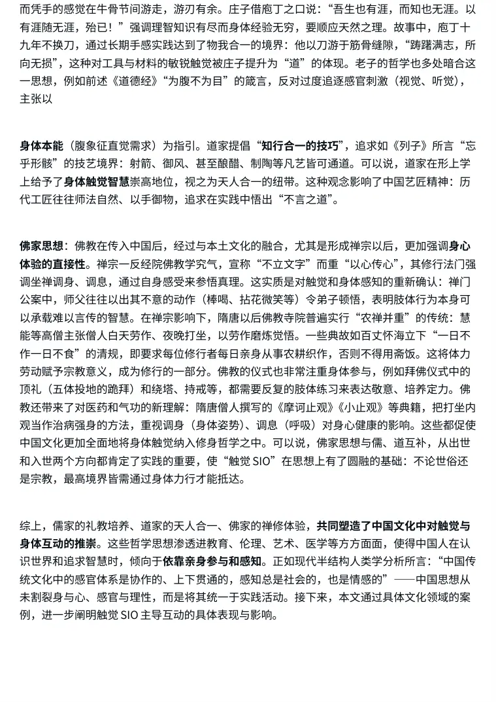
而凭手的感觉在牛骨节间游走，游刃有余。庄子借庖丁之口说：“吾生也有涯，而知也无涯。以有涯随无涯，殆已！”强调理智知识有尽而身体经验无穷，要顺应天然之理。故事中，庖丁十九年不换刀，通过长期手感实践达到了物我合一的境界：他以刀游于筋骨缝隙，“踌躇满志，所向无损”，这种对工具与材料的敏锐触觉被庄子提升为“道”的体现。老子的哲学也多处暗合这一思想，例如前述《道德经》“为腹不为目”的箴言，反对过度追逐感官刺激（视觉、听觉），主张以
身体本能（腹象征直觉需求）为指引。道家提倡“知行合一的技巧”，追求如《列子》所言“忘乎形骸”的技艺境界：射箭、御风、甚至酿醋、制陶等凡艺皆可通道。可以说，道家在形上学上给予了身体触觉智慧崇高地位，视之为天人合一的纽带。这种观念影响了中国艺匠精神：历代工匠往往师法自然、以手御物，追求在实践中悟出“不言之道”。
佛家思想：佛教在传入中国后，经过与本土文化的融合，尤其是形成禅宗以后，更加强调身心体验的直接性。禅宗一反经院佛教学究气，宣称“不立文字”而重“以心传心”，其修行法门强调坐禅调身、调息，通过自身感受来参悟真理。这实质是对触觉和身体感知的重新确认：禅门公案中，师父往往以出其不意的动作（棒喝、拈花微笑等）令弟子顿悟，表明肢体行为本身可以承载难以言传的智慧。在禅宗影响下，隋唐以后佛教寺院普遍实行“农禅并重”的传统：慧能等高僧主张僧人白天劳作、夜晚打坐，以劳作磨炼觉悟。一些典故如百丈怀海立下“一日不作一日不食”的清规，即要求每位修行者每日亲身从事农耕织作，否则不得用斋饭。这将体力劳动赋予宗教意义，成为修行的一部分。佛教的仪式也非常注重身体参与，例如拜佛仪式中的顶礼（五体投地的跪拜）和绕塔、持戒等，都需要反复的肢体练习来表达敬意、培养定力。佛教还带来了对医药和气功的新理解：隋唐僧人撰写的《摩诃止观》《小止观》等典籍，把打坐内观当作治病强身的方法，重视调身（身体姿势）、调息（呼吸）对身心健康的影响。这些都促使中国文化更加全面地将身体触觉纳入修身哲学之中。可以说，佛家思想与儒、道互补，从出世和入世两个方向都肯定了实践的重要，使“触觉SIO”在思想上有了圆融的基础：不论世俗还是宗教，最高境界皆需通过身体力行才能抵达。
综上，儒家的礼教培养、道家的天人合一、佛家的禅修体验，共同塑造了中国文化中对触觉与身体互动的推崇。这些哲学思想渗透进教育、伦理、艺术、医学等方方面面，使得中国人在认识世界和追求智慧时，倾向于依靠亲身参与和感知。正如现代半结构人类学分析所言：“中国传统文化中的感官体系是协作的、上下贯通的，感知总是社会的，也是情感的”——中国思想从未割裂身与心、感官与理性，而是将其统一于实践活动。接下来，本文通过具体文化领域的案例，进一步阐明触觉SIO 主导互动的具体表现与影响。
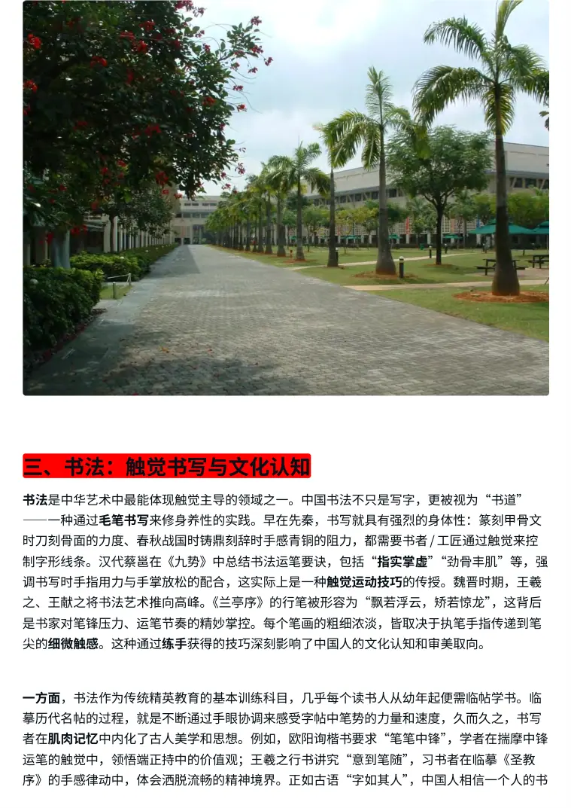
三、书法：触觉书写与文化认知
书法是中华艺术中最能体现触觉主导的领域之一。中国书法不只是写字，更被视为“书道”
——一种通过毛笔书写来修身养性的实践。早在先秦，书写就具有强烈的身体性：篆刻甲骨文时刀刻骨面的力度、春秋战国时铸鼎刻辞时手感青铜的阻力，都需要书者/ 工匠通过触觉来控制字形线条。汉代蔡邕在《九势》中总结书法运笔要诀，包括“指实掌虚”“劲骨丰肌”等，强调书写时手指用力与手掌放松的配合，这实际上是一种触觉运动技巧的传授。魏晋时期，王羲之、王献之将书法艺术推向高峰。《兰亭序》的行笔被形容为“飘若浮云，矫若惊龙”，这背后是书家对笔锋压力、运笔节奏的精妙掌控。每个笔画的粗细浓淡，皆取决于执笔手指传递到笔尖的细微触感。这种通过练手获得的技巧深刻影响了中国人的文化认知和审美取向。
一方面，书法作为传统精英教育的基本训练科目，几乎每个读书人从幼年起便需临帖学书。临摹历代名帖的过程，就是不断通过手眼协调来感受字帖中笔势的力量和速度，久而久之，书写者在肌肉记忆中内化了古人美学和思想。例如，欧阳询楷书要求“笔笔中锋”，学者在揣摩中锋运笔的触觉中，领悟端正持中的价值观；王羲之行书讲究“意到笔随”，习书者在临摹《圣教序》的手感律动中，体会洒脱流畅的精神境界。正如古语“字如其人”，中国人相信一个人的书
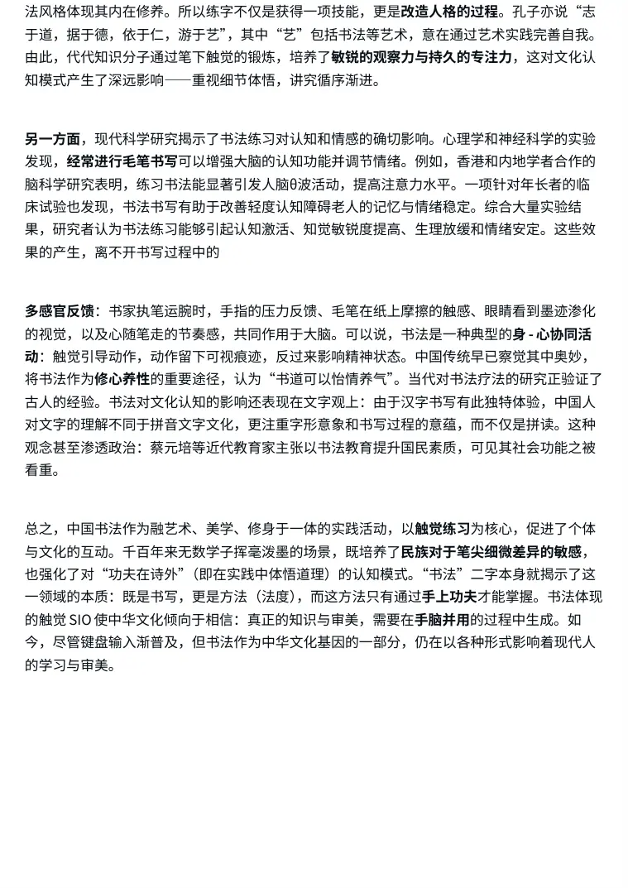
法风格体现其内在修养。所以练字不仅是获得一项技能，更是改造人格的过程。孔子亦说“志于道，据于德，依于仁，游于艺”，其中“艺”包括书法等艺术，意在通过艺术实践完善自我。由此，代代知识分子通过笔下触觉的锻炼，培养了敏锐的观察力与持久的专注力，这对文化认知模式产生了深远影响——重视细节体悟，讲究循序渐进。
另一方面，现代科学研究揭示了书法练习对认知和情感的确切影响。心理学和神经科学的实验发现，经常进行毛笔书写可以增强大脑的认知功能并调节情绪。例如，香港和内地学者合作的脑科学研究表明，练习书法能显著引发人脑θ波活动，提高注意力水平。一项针对年长者的临床试验也发现，书法书写有助于改善轻度认知障碍老人的记忆与情绪稳定。综合大量实验结
果，研究者认为书法练习能够引起认知激活、知觉敏锐度提高、生理放缓和情绪安定。这些效果的产生，离不开书写过程中的
多感官反馈：书家执笔运腕时，手指的压力反馈、毛笔在纸上摩擦的触感、眼睛看到墨迹渗化的视觉，以及心随笔走的节奏感，共同作用于大脑。可以说，书法是一种典型的身- 心协同活动：触觉引导动作，动作留下可视痕迹，反过来影响精神状态。中国传统早已察觉其中奥妙，将书法作为修心养性的重要途径，认为“书道可以怡情养气”。当代对书法疗法的研究正验证了古人的经验。书法对文化认知的影响还表现在文字观上：由于汉字书写有此独特体验，中国人对文字的理解不同于拼音文字文化，更注重字形意象和书写过程的意蕴，而不仅是拼读。这种观念甚至渗透政治：蔡元培等近代教育家主张以书法教育提升国民素质，可见其社会功能之被看重。
总之，中国书法作为融艺术、美学、修身于一体的实践活动，以触觉练习为核心，促进了个体与文化的互动。千百年来无数学子挥毫泼墨的场景，既培养了民族对于笔尖细微差异的敏感，也强化了对“功夫在诗外”（即在实践中体悟道理）的认知模式。“书法”二字本身就揭示了这一领域的本质：既是书写，更是方法（法度），而这方法只有通过手上功夫才能掌握。书法体现的触觉SIO 使中华文化倾向于相信：真正的知识与审美，需要在手脑并用的过程中生成。如
今，尽管键盘输入渐普及，但书法作为中华文化基因的一部分，仍在以各种形式影响着现代人的学习与审美。
四、建筑：工匠技艺与空间触感
中国传统建筑蕴含着丰富的触觉智慧，从营造技术到空间体验都体现出“以手为本”的特征。与许多西方石砌建筑不同，中国建筑以木构架为主体，其工艺核心在于木材的手工加工和装
配。自周代《考工记》起，历代建筑匠师就依赖经验和触觉来选料、构件和施工。中国木建筑的精髓在于“榫卯”结构——不用一钉一铆，完全靠木构件之间的凹凸咬合连接梁柱。这一工艺要求匠人对每块木头的纹理硬度了然于心，锯凿刀法全凭手上感觉拿捏，才能确保榫头卯眼严丝合缝又留有伸缩裕量。榫卯结构的灵活性赋予建筑抗震性能，而这背后凝结的是代代木匠手传心授的技巧和心得。2009 年入选联合国非遗的“中国传统木结构营造技艺”明确指出：这种建筑技艺通过师徒口传和实践示范传承，每个营造环节都有一整套独特而系统的方法.。换言之，建筑知识主要以实践形态存在于工匠群体中，而非书本理论。
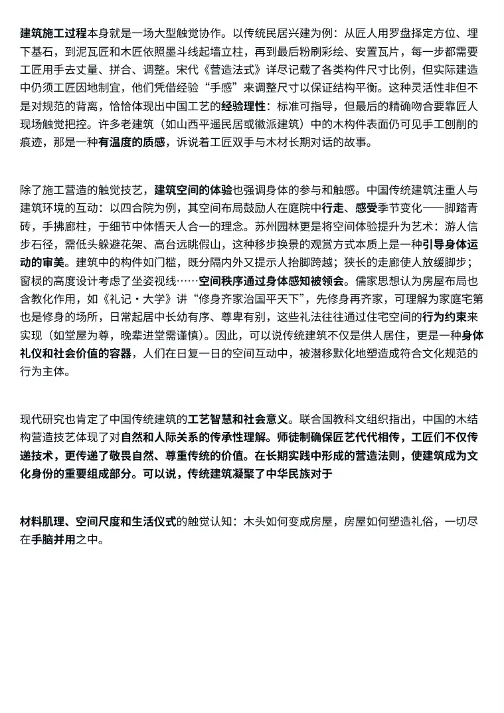
建筑施工过程本身就是一场大型触觉协作。以传统民居兴建为例：从匠人用罗盘择定方位、埋下基石，到泥瓦匠和木匠依照墨斗线起墙立柱，再到最后粉刷彩绘、安置瓦片，每一步都需要工匠用手去丈量、拼合、调整。宋代《营造法式》详尽记载了各类构件尺寸比例，但实际建造中仍须工匠因地制宜，他们凭借经验“手感”来调整尺寸以保证结构平衡。这种灵活性非但不是对规范的背离，恰恰体现出中国工艺的经验理性：标准可指导，但最后的精确吻合要靠匠人现场触觉把控。许多老建筑（如山西平遥民居或徽派建筑）中的木构件表面仍可见手工刨削的痕迹，那是一种有温度的质感，诉说着工匠双手与木材长期对话的故事。
除了施工营造的触觉技艺，建筑空间的体验也强调身体的参与和触感。中国传统建筑注重人与建筑环境的互动：以四合院为例，其空间布局鼓励人在庭院中行走、感受季节变化——脚踏青砖，手拂廊柱，于细节中体悟天人合一的理念。苏州园林更是将空间体验提升为艺术：游人信步石径，需低头躲避花架、高台远眺假山，这种移步换景的观赏方式本质上是一种引导身体运动的审美。建筑中的构件如门槛，既分隔内外又提示人抬脚跨越；狭长的走廊使人放缓脚步；窗棂的高度设计考虑了坐姿视线……空间秩序通过身体感知被领会。儒家思想认为房屋布局也含教化作用，如《礼记·大学》讲“修身齐家治国平天下”，先修身再齐家，可理解为家庭宅第也是修身的场所，日常起居中长幼有序、尊卑有别，这些礼法往往通过住宅空间的行为约束来实现（如堂屋为尊，晚辈进堂需谨慎）。因此，可以说传统建筑不仅是供人居住，更是一种身体礼仪和社会价值的容器，人们在日复一日的空间互动中，被潜移默化地塑造成符合文化规范的行为主体。
现代研究也肯定了中国传统建筑的工艺智慧和社会意义。联合国教科文组织指出，中国的木结构营造技艺体现了对自然和人际关系的传承性理解。师徒制确保匠艺代代相传，工匠们不仅传递技术，更传递了敬畏自然、尊重传统的价值。在长期实践中形成的营造法则，使建筑成为文化身份的重要组成部分。可以说，传统建筑凝聚了中华民族对于
材料肌理、空间尺度和生活仪式的触觉认知：木头如何变成房屋，房屋如何塑造礼俗，一切尽在手脑并用之中。
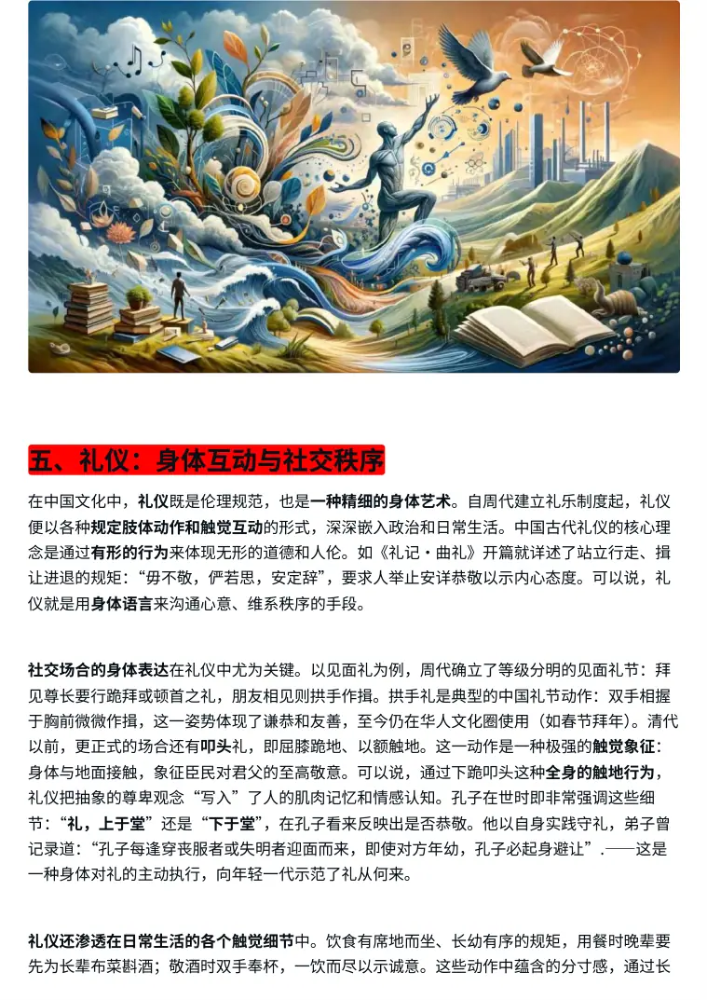
五、礼仪：身体互动与社交秩序
在中国文化中，礼仪既是伦理规范，也是一种精细的身体艺术。自周代建立礼乐制度起，礼仪便以各种规定肢体动作和触觉互动的形式，深深嵌入政治和日常生活。中国古代礼仪的核心理念是通过有形的行为来体现无形的道德和人伦。如《礼记·曲礼》开篇就详述了站立行走、揖让进退的规矩：“毋不敬，俨若思，安定辞”，要求人举止安详恭敬以示内心态度。可以说，礼仪就是用身体语言来沟通心意、维系秩序的手段。
社交场合的身体表达在礼仪中尤为关键。以见面礼为例，周代确立了等级分明的见面礼节：拜见尊长要行跪拜或顿首之礼，朋友相见则拱手作揖。拱手礼是典型的中国礼节动作：双手相握于胸前微微作揖，这一姿势体现了谦恭和友善，至今仍在华人文化圈使用（如春节拜年）。清代以前，更正式的场合还有叩头礼，即屈膝跪地、以额触地。这一动作是一种极强的触觉象征：身体与地面接触，象征臣民对君父的至高敬意。可以说，通过下跪叩头这种全身的触地行为，礼仪把抽象的尊卑观念“写入”了人的肌肉记忆和情感认知。孔子在世时即非常强调这些细
节：“礼，上于堂”还是“下于堂”，在孔子看来反映出是否恭敬。他以自身实践守礼，弟子曾记录道：“孔子每逢穿丧服者或失明者迎面而来，即使对方年幼，孔子必起身避让”.——这是一种身体对礼的主动执行，向年轻一代示范了礼从何来。
礼仪还渗透在日常生活的各个触觉细节中。饮食有席地而坐、长幼有序的规矩，用餐时晚辈要先为长辈布菜斟酒；敬酒时双手奉杯，一饮而尽以示诚意。这些动作中蕴含的分寸感，通过长
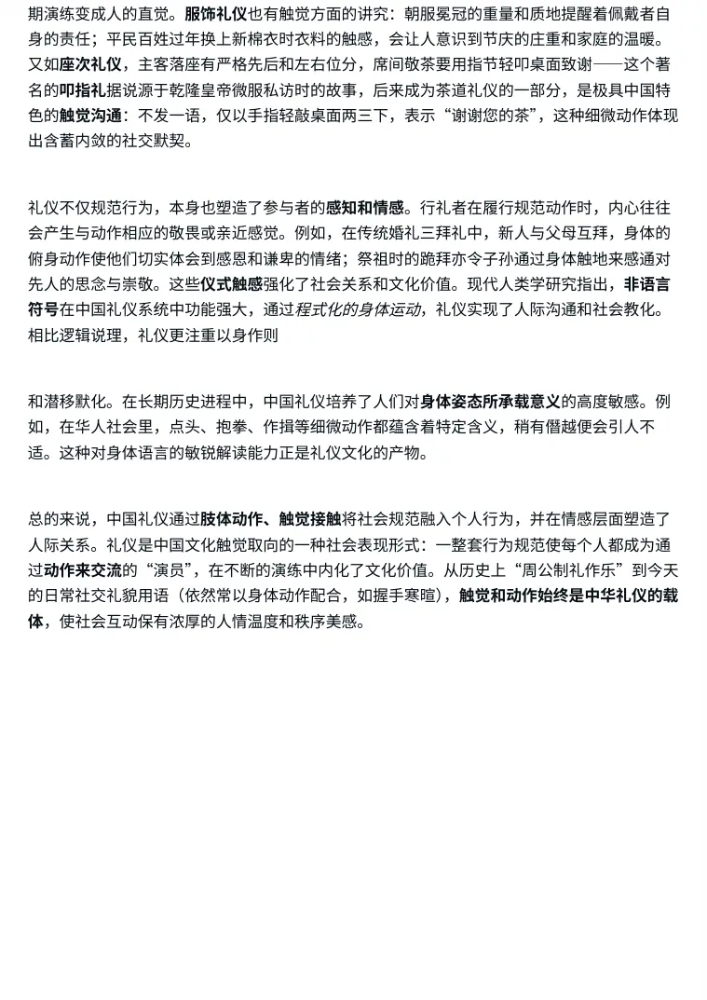
期演练变成人的直觉。服饰礼仪也有触觉方面的讲究：朝服冕冠的重量和质地提醒着佩戴者自身的责任；平民百姓过年换上新棉衣时衣料的触感，会让人意识到节庆的庄重和家庭的温暖。又如座次礼仪，主客落座有严格先后和左右位分，席间敬茶要用指节轻叩桌面致谢——这个著名的叩指礼据说源于乾隆皇帝微服私访时的故事，后来成为茶道礼仪的一部分，是极具中国特色的触觉沟通：不发一语，仅以手指轻敲桌面两三下，表示“谢谢您的茶”，这种细微动作体现出含蓄内敛的社交默契。
礼仪不仅规范行为，本身也塑造了参与者的感知和情感。行礼者在履行规范动作时，内心往往会产生与动作相应的敬畏或亲近感觉。例如，在传统婚礼三拜礼中，新人与父母互拜，身体的俯身动作使他们切实体会到感恩和谦卑的情绪；祭祖时的跪拜亦令子孙通过身体触地来感通对先人的思念与崇敬。这些仪式触感强化了社会关系和文化价值。现代人类学研究指出，非语言符号在中国礼仪系统中功能强大，通过程式化的身体运动，礼仪实现了人际沟通和社会教化。相比逻辑说理，礼仪更注重以身作则
和潜移默化。在长期历史进程中，中国礼仪培养了人们对身体姿态所承载意义的高度敏感。例如，在华人社会里，点头、抱拳、作揖等细微动作都蕴含着特定含义，稍有僭越便会引人不
适。这种对身体语言的敏锐解读能力正是礼仪文化的产物。
总的来说，中国礼仪通过肢体动作、触觉接触将社会规范融入个人行为，并在情感层面塑造了人际关系。礼仪是中国文化触觉取向的一种社会表现形式：一整套行为规范使每个人都成为通过动作来交流的“演员”，在不断的演练中内化了文化价值。从历史上“周公制礼作乐”到今天的日常社交礼貌用语（依然常以身体动作配合，如握手寒暄），触觉和动作始终是中华礼仪的载体，使社会互动保有浓厚的人情温度和秩序美感。
六、医学：触觉诊疗与生命观念
中国传统医学（中医）体系同样鲜明地体现了“触觉SIO”的文化特征。与现代西医大量依赖化验、影像等视觉数据不同，中医自古以来就重视医生与患者身体的直接接触，通过触觉来诊断和治疗，将其视作把握生命之机的关键。四诊之首的切脉是中医触觉诊断的典型体现。早在《黄帝内经》成书（战国至汉初）之时，就详细讨论了脉象诊断法：医者以食指、中指、无名指轻按患者桡动脉处，感觉脉搏跳动的浮沉迟疾，从而判断内脏寒热虚实。这一诊断完全倚赖医生手指的敏锐触感和经验，被誉为“妙手神探”。据剑桥大学中国医学史专家许怡
（Elisabeth Hsu）研究，早期中医典籍中有极为丰富的描述脉动感觉的词汇，脉诊已经发展出复杂的触觉知识体系
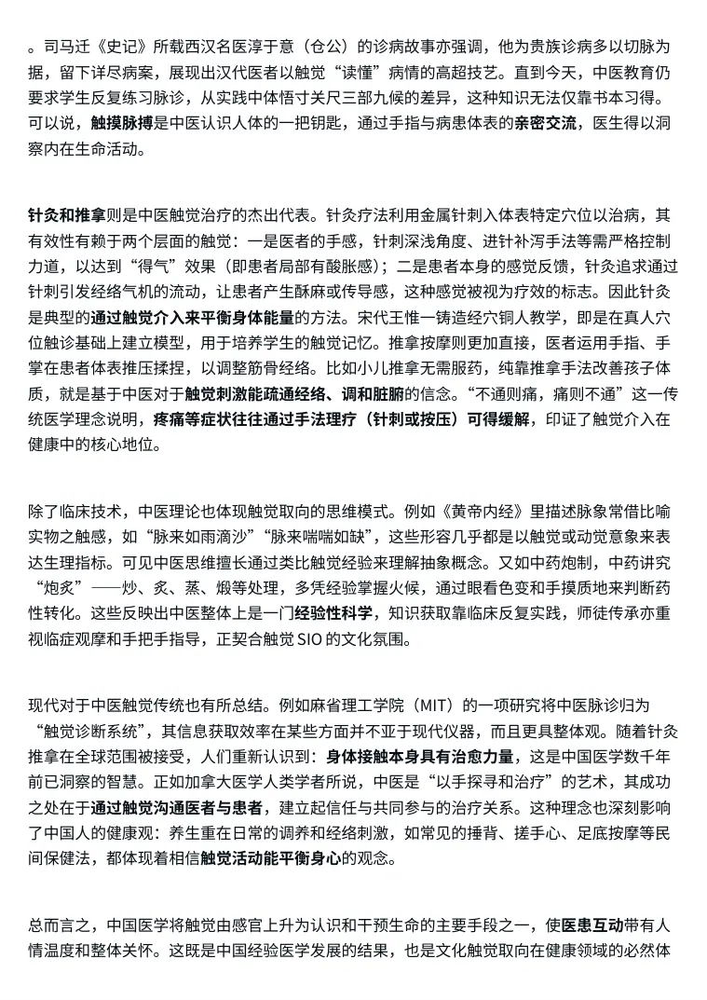
。司马迁《史记》所载西汉名医淳于意（仓公）的诊病故事亦强调，他为贵族诊病多以切脉为据，留下详尽病案，展现出汉代医者以触觉“读懂”病情的高超技艺。直到今天，中医教育仍要求学生反复练习脉诊，从实践中体悟寸关尺三部九候的差异，这种知识无法仅靠书本习得。可以说，触摸脉搏是中医认识人体的一把钥匙，通过手指与病患体表的亲密交流，医生得以洞察内在生命活动。
针灸和推拿则是中医触觉治疗的杰出代表。针灸疗法利用金属针刺入体表特定穴位以治病，其有效性有赖于两个层面的触觉：一是医者的手感，针刺深浅角度、进针补泻手法等需严格控制力道，以达到“得气”效果（即患者局部有酸胀感）；二是患者本身的感觉反馈，针灸追求通过针刺引发经络气机的流动，让患者产生酥麻或传导感，这种感觉被视为疗效的标志。因此针灸是典型的通过触觉介入来平衡身体能量的方法。宋代王惟一铸造经穴铜人教学，即是在真人穴位触诊基础上建立模型，用于培养学生的触觉记忆。推拿按摩则更加直接，医者运用手指、手掌在患者体表推压揉捏，以调整筋骨经络。比如小儿推拿无需服药，纯靠推拿手法改善孩子体质，就是基于中医对于触觉刺激能疏通经络、调和脏腑的信念。“不通则痛，痛则不通”这一传统医学理念说明，疼痛等症状往往通过手法理疗（针刺或按压）可得缓解，印证了触觉介入在健康中的核心地位。
除了临床技术，中医理论也体现触觉取向的思维模式。例如《黄帝内经》里描述脉象常借比喻实物之触感，如“脉来如雨滴沙”“脉来喘喘如缺”，这些形容几乎都是以触觉或动觉意象来表达生理指标。可见中医思维擅长通过类比触觉经验来理解抽象概念。又如中药炮制，中药讲究“炮炙”——炒、炙、蒸、煅等处理，多凭经验掌握火候，通过眼看色变和手摸质地来判断药性转化。这些反映出中医整体上是一门经验性科学，知识获取靠临床反复实践，师徒传承亦重视临症观摩和手把手指导，正契合触觉SIO 的文化氛围。
现代对于中医触觉传统也有所总结。例如麻省理工学院（MIT）的一项研究将中医脉诊归为
“触觉诊断系统”，其信息获取效率在某些方面并不亚于现代仪器，而且更具整体观。随着针灸推拿在全球范围被接受，人们重新认识到：身体接触本身具有治愈力量，这是中国医学数千年前已洞察的智慧。正如加拿大医学人类学者所说，中医是“以手探寻和治疗”的艺术，其成功之处在于通过触觉沟通医者与患者，建立起信任与共同参与的治疗关系。这种理念也深刻影响了中国人的健康观：养生重在日常的调养和经络刺激，如常见的捶背、搓手心、足底按摩等民间保健法，都体现着相信触觉活动能平衡身心的观念。
总而言之，中国医学将触觉由感官上升为认识和干预生命的主要手段之一，使医患互动带有人情温度和整体关怀。这既是中国经验医学发展的结果，也是文化触觉取向在健康领域的必然体
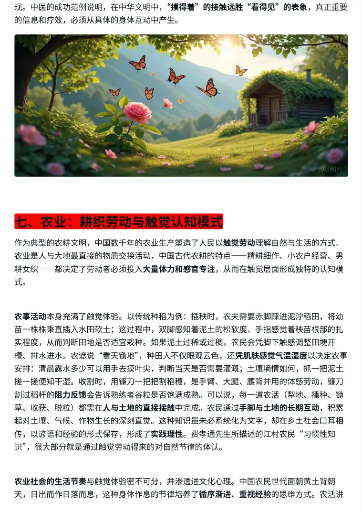
现。中医的成功范例说明，在中华文明中，“摸得着”的接触远胜“看得见”的表象，真正重要的信息和疗效，必须从具体的身体互动中产生。
七、农业：耕织劳动与触觉认知模式
作为典型的农耕文明，中国数千年的农业生产塑造了人民以触觉劳动理解自然与生活的方式。农业是人与大地最直接的物质交换活动，中国古代农耕的特点——精耕细作、小农户经营、男耕女织——都决定了劳动者必须投入大量体力和感官专注，从而在触觉层面形成独特的认知模式。
农事活动本身充满了触觉体验。以传统种稻为例：插秧时，农夫需要赤脚踩进泥泞稻田，将幼苗一株株秉直插入水田软土；这过程中，双脚感知着泥土的松软度、手指感觉着秧苗根部的扎实程度，从而判断田地是否适宜栽种。如果泥土过稀或过稠，农民会凭脚下触感调整田埂开
槽、排水进水。农谚说“看天锄地”，种田人不仅眼观云色，还凭肌肤感觉气温湿度以决定农事安排：清晨露水多少可以用手去摸叶尖，判断当天是否需要灌溉；土壤墒情如何，抓一把泥土搓一搓便知干湿。收割时，用镰刀一把把割稻穗，是手臂、大腿、腰背并用的体感劳动，镰刀割过稻杆的阻力反馈会告诉熟练者谷粒是否饱满成熟。可以说，每一道农活（犁地、播种、锄草、收获、脱粒）都需在人与土地的直接接触中完成。农民通过手脚与土地的长期互动，积累起对土壤、气候、作物生长的深刻直觉。这种知识虽未必系统化为文字，却在乡土社会口耳相传，以谚语和经验的形式保存，形成了实践理性。费孝通先生所描述的江村农民“习惯性知
识”，很大部分就是通过触觉劳动得来的对自然节律的体认。
农业社会的生活节奏与触觉体验密不可分，并渗透进文化心理。中国农民世代面朝黄土背朝
天，日出而作日落而息，这种身体作息的节律培养了循序渐进、重视经验的思维方式。农活讲
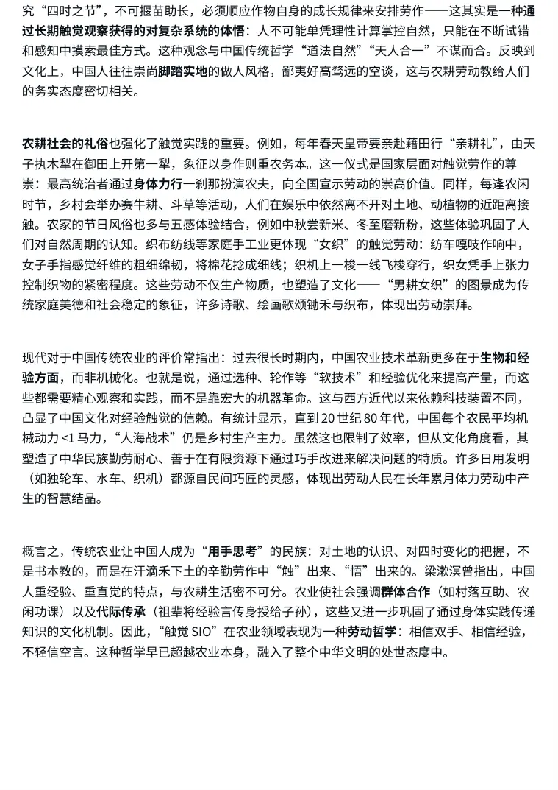
究“四时之节”，不可揠苗助长，必须顺应作物自身的成长规律来安排劳作——这其实是一种通过长期触觉观察获得的对复杂系统的体悟：人不可能单凭理性计算掌控自然，只能在不断试错和感知中摸索最佳方式。这种观念与中国传统哲学“道法自然”“天人合一”不谋而合。反映到文化上，中国人往往崇尚脚踏实地的做人风格，鄙夷好高骛远的空谈，这与农耕劳动教给人们的务实态度密切相关。
农耕社会的礼俗也强化了触觉实践的重要。例如，每年春天皇帝要亲赴藉田行“亲耕礼”，由天子执木犁在御田上开第一犁，象征以身作则重农务本。这一仪式是国家层面对触觉劳作的尊
崇：最高统治者通过身体力行一刹那扮演农夫，向全国宣示劳动的崇高价值。同样，每逢农闲时节，乡村会举办赛牛耕、斗草等活动，人们在娱乐中依然离不开对土地、动植物的近距离接触。农家的节日风俗也多与五感体验结合，例如中秋尝新米、冬至磨新粉，这些体验巩固了人们对自然周期的认知。织布纺线等家庭手工业更体现“女织”的触觉劳动：纺车嘎吱作响中，女子手指感觉纤维的粗细绵韧，将棉花捻成细线；织机上一梭一线飞梭穿行，织女凭手上张力控制织物的紧密程度。这些劳动不仅生产物质，也塑造了文化——“男耕女织”的图景成为传统家庭美德和社会稳定的象征，许多诗歌、绘画歌颂锄禾与织布，体现出劳动崇拜。
现代对于中国传统农业的评价常指出：过去很长时期内，中国农业技术革新更多在于生物和经验方面，而非机械化。也就是说，通过选种、轮作等“软技术”和经验优化来提高产量，而这些都需要精心观察和实践，而不是靠宏大的机器革命。这与西方近代以来依赖科技装置不同，凸显了中国文化对经验触觉的信赖。有统计显示，直到20 世纪80 年代，中国每个农民平均机械动力<1 马力，“人海战术”仍是乡村生产主力。虽然这也限制了效率，但从文化角度看，其塑造了中华民族勤劳耐心、善于在有限资源下通过巧手改进来解决问题的特质。许多日用发明（如独轮车、水车、织机）都源自民间巧匠的灵感，体现出劳动人民在长年累月体力劳动中产生的智慧结晶。
概言之，传统农业让中国人成为“用手思考”的民族：对土地的认识、对四时变化的把握，不是书本教的，而是在汗滴禾下土的辛勤劳作中“触”出来、“悟”出来的。梁漱溟曾指出，中国人重经验、重直觉的特点，与农耕生活密不可分。农业使社会强调群体合作（如村落互助、农闲功课）以及代际传承（祖辈将经验言传身授给子孙），这些又进一步巩固了通过身体实践传递知识的文化机制。因此，“触觉SIO”在农业领域表现为一种劳动哲学：相信双手、相信经验，不轻信空言。这种哲学早已超越农业本身，融入了整个中华文明的处世态度中。
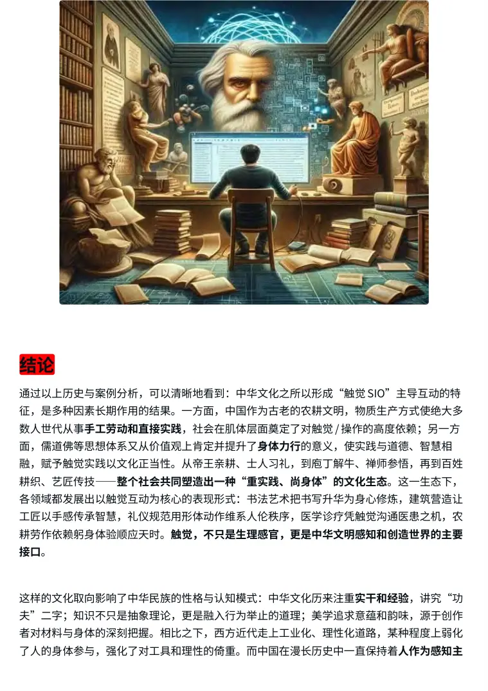
结论
通过以上历史与案例分析，可以清晰地看到：中华文化之所以形成“触觉SIO”主导互动的特征，是多种因素长期作用的结果。一方面，中国作为古老的农耕文明，物质生产方式使绝大多数人世代从事手工劳动和直接实践，社会在肌体层面奠定了对触觉/ 操作的高度依赖；另一方面，儒道佛等思想体系又从价值观上肯定并提升了身体力行的意义，使实践与道德、智慧相
融，赋予触觉实践以文化正当性。从帝王亲耕、士人习礼，到庖丁解牛、禅师参悟，再到百姓耕织、艺匠传技——整个社会共同塑造出一种“重实践、尚身体”的文化生态。这一生态下，各领域都发展出以触觉互动为核心的表现形式：书法艺术把书写升华为身心修炼，建筑营造让工匠以手感传承智慧，礼仪规范用形体动作维系人伦秩序，医学诊疗凭触觉沟通医患之机，农耕劳作依赖躬身体验顺应天时。触觉，不只是生理感官，更是中华文明感知和创造世界的主要接口。
这样的文化取向影响了中华民族的性格与认知模式：中华文化历来注重实干和经验，讲究“功夫”二字；知识不只是抽象理论，更是融入行为举止的道理；美学追求意蕴和韵味，源于创作者对材料与身体的深刻把握。相比之下，西方近代走上工业化、理性化道路，某种程度上弱化了人的身体参与，强化了对工具和理性的倚重。而中国在漫长历史中一直保持着人作为感知主
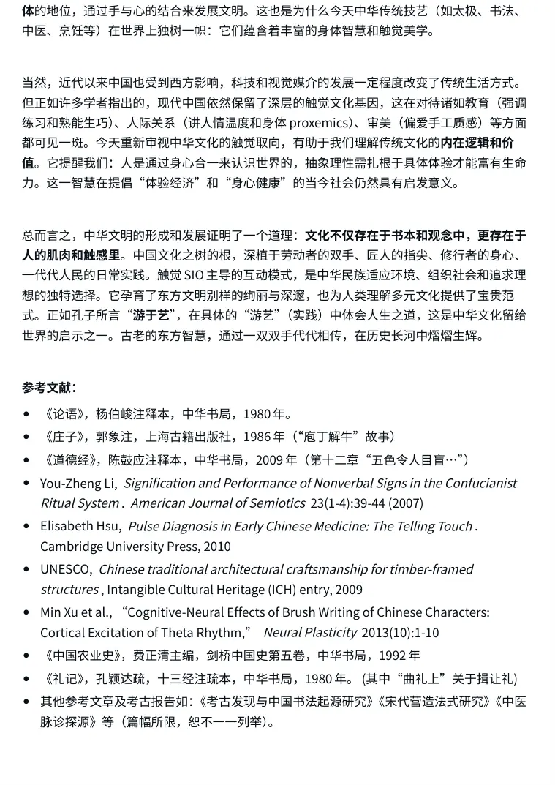
体的地位，通过手与心的结合来发展文明。这也是为什么今天中华传统技艺（如太极、书法、中医、烹饪等）在世界上独树一帜：它们蕴含着丰富的身体智慧和触觉美学。
当然，近代以来中国也受到西方影响，科技和视觉媒介的发展一定程度改变了传统生活方式。但正如许多学者指出的，现代中国依然保留了深层的触觉文化基因，这在对待诸如教育（强调练习和熟能生巧）、人际关系（讲人情温度和身体 proxemics）、审美（偏爱手工质感）等方面都可见一斑。今天重新审视中华文化的触觉取向，有助于我们理解传统文化的内在逻辑和价
值。它提醒我们：人是通过身心合一来认识世界的，抽象理性需扎根于具体体验才能富有生命力。这一智慧在提倡“体验经济”和“身心健康”的当今社会仍然具有启发意义。
总而言之，中华文明的形成和发展证明了一个道理：文化不仅存在于书本和观念中，更存在于人的肌肉和触感里。中国文化之树的根，深植于劳动者的双手、匠人的指尖、修行者的身心、一代代人民的日常实践。触觉SIO 主导的互动模式，是中华民族适应环境、组织社会和追求理想的独特选择。它孕育了东方文明别样的绚丽与深邃，也为人类理解多元文化提供了宝贵范
式。正如孔子所言“游于艺”，在具体的“游艺”（实践）中体会人生之道，这是中华文化留给世界的启示之一。古老的东方智慧，通过一双双手代代相传，在历史长河中熠熠生辉。
参考文献：
《论语》，杨伯峻注释本，中华书局，1980 年。
《庄子》，郭象注，上海古籍出版社，1986 年（“庖丁解牛”故事）
《道德经》，陈鼓应注释本，中华书局，2009 年（第十二章“五色令人目盲…”）
You-Zheng Li, Signification and Performance of Nonverbal Signs in the Confucianist
Ritual System . American Journal of Semiotics 23(1-4):39-44 (2007)
Elisabeth Hsu, Pulse Diagnosis in Early Chinese Medicine: The Telling Touch .
Cambridge University Press, 2010
UNESCO, Chinese traditional architectural craftsmanship for timber-framed
structures , Intangible Cultural Heritage (ICH) entry, 2009
Min Xu et al., “Cognitive-Neural Effects of Brush Writing of Chinese Characters:
Cortical Excitation of Theta Rhythm,” Neural Plasticity 2013(10):1-10
《中国农业史》，费正清主编，剑桥中国史第五卷，中华书局，1992 年
《礼记》，孔颖达疏，十三经注疏本，中华书局，1980 年。 (其中“曲礼上”关于揖让礼)
其他参考文章及考古报告如：《考古发现与中国书法起源研究》《宋代营造法式研究》《中医
脉诊探源》等（篇幅所限，恕不一一列举）。